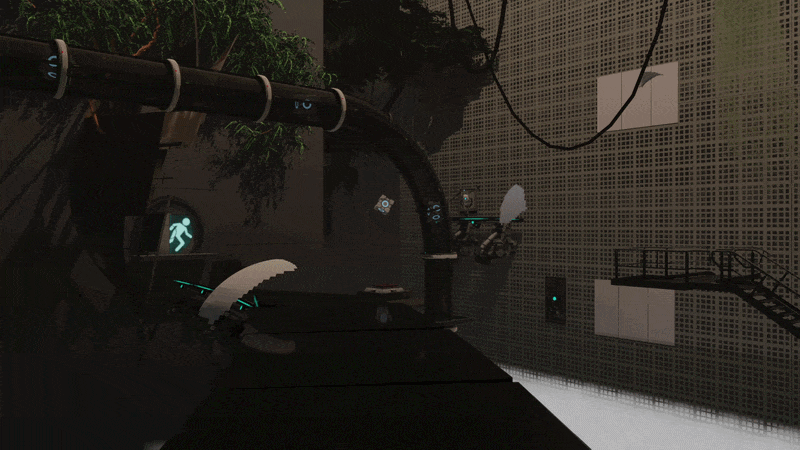
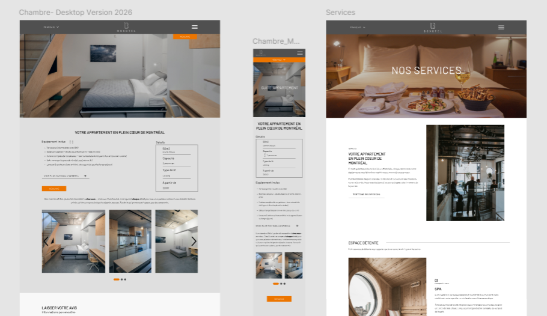
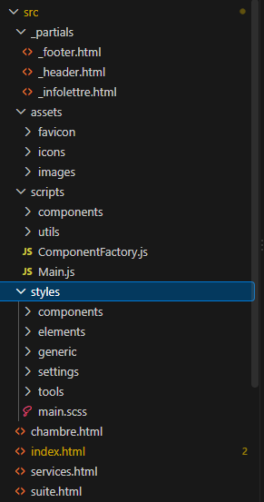
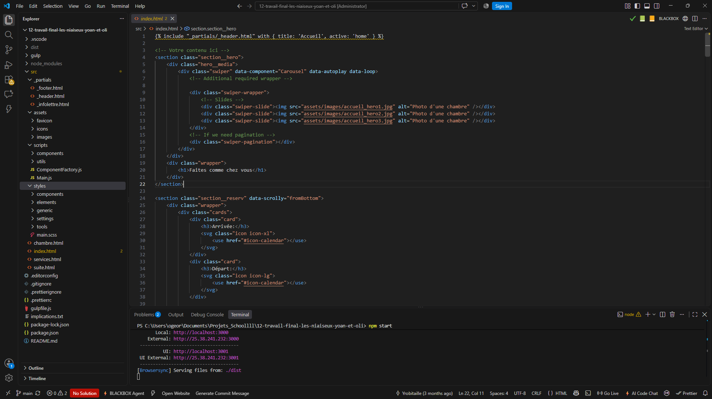
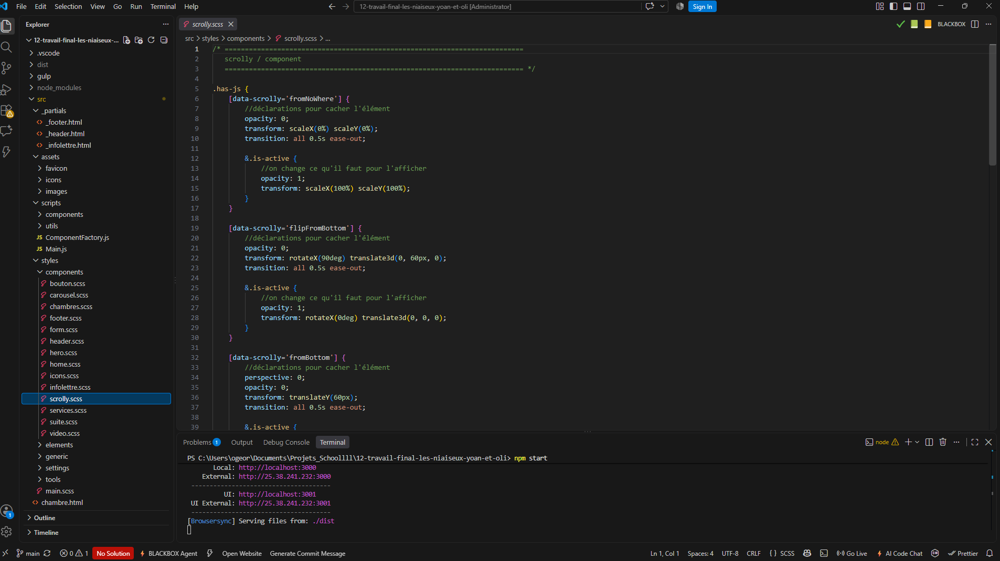
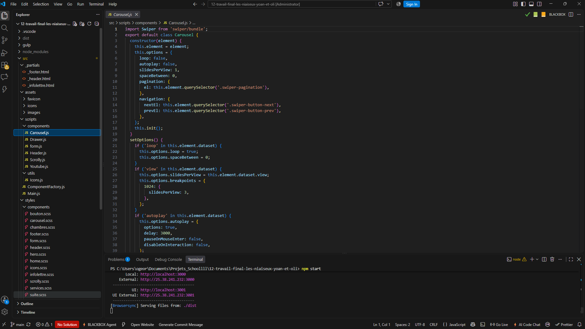

01
Inspiration
Premièrement, j’ai choisi l’ univers de mon segment, le jeu Portal 2 , et j’ai défini l’ ambiance que je voulais créer.
Olivier Georges
000%
La route infinie est une création 3D réalisée dans Blender . Chaque étudiant créait un segment d’un tunnel infini , et tous les segments mis bout à bout formaient un grand voyage à travers les projets de la classe.
Modélisateur et animateur 3D - Seul - Projet scolaire - 2025
Voir le projet

Le projet La route infinie a été réalisé dans le cadre du cours d’ animation multimédia donné par François Arsenault . Nous devions faire un montage 3D et vidéo à partir d’un jeu ou d’un monde, puis l’intégrer dans Blender . Chaque personne créait son propre segment du tunnel. Une fois tous les segments assemblés, on obtenait un tunnel de l’infini où défilaient tous les projets étudiants. Mon segment s’inspire du jeu vidéo Portal 2 .
Modélisateur et animateur 3D . J’ai créé mon segment du tunnel au complet : la mise en scène inspirée de Portal 2, l’intégration des modèles 3D , l’ éclairage , l’ animation de la caméra et l’ ambiance sonore .
Dans ce projet, l’IA n’a pas été utilisée . La mise en scène vient de ma créativité , et les modèles et les sons externes proviennent de sources créditées .

Premièrement, j’ai choisi l’ univers de mon segment, le jeu Portal 2 , et j’ai défini l’ ambiance que je voulais créer.

Deuxièmement, j’ai importé et placé les modèles 3D (Portal 2, arbres, plantes et glycines) pour construire mon décor dans Blender.

Troisièmement, j’ai travaillé l’ éclairage et les matériaux pour donner une atmosphère crédible au tunnel.

Quatrièmement, j’ai animé la caméra pour qu’elle traverse mon segment de façon fluide et qu’il se raccorde aux segments des autres étudiants.

Dernièrement, le rendu final et l’ajout des effets sonores pour compléter l’ immersion .
Respecter les dimensions et la trajectoire de caméra communes à toute la classe.
Optimiser les modèles et les réglages de rendu pour réduire le temps de calcul.
Mélanger les éléments de Portal 2 avec une végétation dense pour créer un contraste unique.
En conclusion, La route infinie m’a permis de développer mes compétences en mise en scène 3D , en éclairage et en animation dans Blender . Travailler sur un segment d’un projet commun m’a aussi appris à respecter des contraintes partagées pour que le résultat final soit cohérent .
Retourner aux projets
Projet La route infinie
Dans ce projet, l’IA n’a pas été utilisée .
La mise en scène, l’éclairage, l’animation et le montage ont entièrement été faits par moi.
Les modèles 3D et les sons externes proviennent des sources créditées ci-dessous.
Modèles Portal 2 : Portal 2 Model Pack for Blender, hazelcat3s
Arbre : Jungle Tree (Sketchfab)
Plantes : Splash of Color – Unique Photogrammetry Plants (Sketchfab)
Glycine : Wisteria Brachybotrys 02 (Sketchfab)
Sons (Freesound) : xkeril , grandpablaine2 , Kronek9 , kyles , kyles , ibrizie , ValentinPetiteau
Inspiration : le jeu vidéo Portal 2 (Valve)
Cours d’animation multimédia : François Arsenault
Projet scolaire réalisé sans but commercial. Les modèles, les sons et l’univers de Portal 2 appartiennent à leurs propriétaires respectifs.